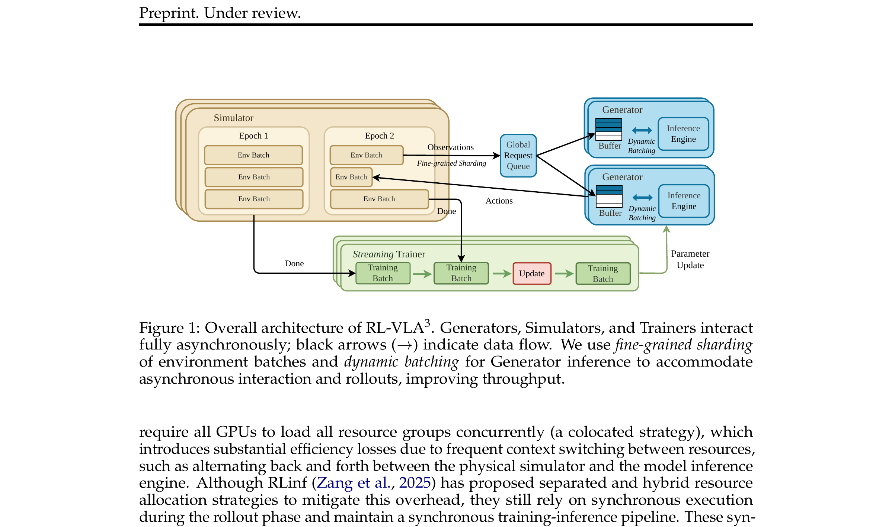

RL-VLA³: A Flexible and Asynchronous Reinforcement Learning Framework for VLA Training
Sun 等 · Ant Group / Peking University · 2026 · arXiv:2602.05765 · Zotero PTGYVP2T
它优化的是 wall-clock 与硬件利用率，不应把吞吐提升误读成更好的样本效率。
§1 Introduction：作者为什么必须做这篇工作
VLA 的 RL 训练不是普通 LLM RL：仿真器可能一次前进数秒，不同环境的 CPU/GPU 占用差异巨大，而生成器与训练器又有各自批处理节奏。同步 rollout 把一整批环境绑在一起，最慢实例会让其余 GPU 空等。
RL-VLA³ 把 Simulator、Generator、Trainer 三类资源彻底解耦。动态 batching 汇集就绪请求，environment sharding 决定环境如何分配，策略版本与 replay 允许各组件异步推进。论文贡献主要是系统吞吐，而不是新的 RL loss。
展开原文 · 核心动机
“fine-grained asynchronous interaction between simulation, inference, and training components”
§2 Related Work：它接在哪些路线之后
RLHF 系统如 veRL、OpenRLHF 常把语言 rollout 视为同质批次；机器人框架 RLinf、SimpleVLA 已支持 VLA RL，但通常仍有全局同步阶段。仿真环境的长尾延迟使这些同步设计浪费更明显。
RL-VLA³ 与 AcceRL、D-VLA 同属异步系统路线。它强调细粒度 interaction interface：环境、推理、训练可独立扩缩容，同时通过 policy version 控制 off-policy 程度。
§3 问题设定：状态、动作与反馈
Simulator 负责物理步进，Generator 批量做 VLA 推理，Trainer 消费轨迹更新参数。三者通过队列通信，不要求一批 rollout 全部完成才进入下一轮。
§4 方法总览：沿原图走一遍
上一节确定了学习接口；现在看论文原图，追踪观测如何变成动作、环境反馈又如何回到可训练模块。

1. Simulator 异步提交观测请求
每个 Simulator 独立推进环境，观测一旦就绪就提交推理请求，不等待同批其他环境。这样慢物理实例只阻塞自己，不再制造全局 barrier。
输入是什么：相机图像或视频，加上任务指令和机器人当前状态。它们还是原始观测，模型尚未把它们变成可用于预测或控制的特征。
这一步究竟做什么：每个 Simulator 独立推进环境，观测一旦就绪就提交推理请求，不等待同批其他环境。这样慢物理实例只阻塞自己，不再制造全局 barrier。
输出到哪里：经过本步骤处理、含义更明确的中间结果。这个结果会交给下一步“Generator 动态合批并返回动作”继续处理。
为什么不能省略：它把未经处理的原始问题变成后续模块可以计算的输入，是整条链路的起点。
2. Generator 动态合批并返回动作
Generator 从多个队列动态收集请求并合批做 VLA 前向，再把动作按环境 ID 返回。合批提高 GPU 利用率，但必须携带策略版本，保证动作和后续轨迹可追溯。
输入是什么：来自上一步“Simulator 异步提交观测请求”的产物：经过本步骤处理、含义更明确的中间结果。本步骤还会按论文设置读取当前条件、时间步或训练信号。
这一步究竟做什么：Generator 从多个队列动态收集请求并合批做 VLA 前向，再把动作按环境 ID 返回。合批提高 GPU 利用率，但必须携带策略版本，保证动作和后续轨迹可追溯。
输出到哪里：经过本步骤处理、含义更明确的中间结果。这个结果会交给下一步“轨迹按环境独立写入训练队列”继续处理。
为什么不能省略：它承担上下两步之间的接口；缺少它，前一步产生的信息无法以正确格式或正确含义传到下一步。
3. 轨迹按环境独立写入训练队列
环境完成的 transition 按实例独立写入训练队列，短 episode 不必等长 episode。队列解耦仿真吞吐与 trainer 节奏，也允许按任务或 stale 程度做重采样。
输入是什么：来自上一步“Generator 动态合批并返回动作”的产物：经过本步骤处理、含义更明确的中间结果。本步骤还会按论文设置读取当前条件、时间步或训练信号。
这一步究竟做什么：环境完成的 transition 按实例独立写入训练队列，短 episode 不必等长 episode。队列解耦仿真吞吐与 trainer 节奏，也允许按任务或 stale 程度做重采样。
输出到哪里：参数得到更新的模型，或能供下一轮训练使用的新监督信号。这个结果会交给下一步“Trainer 持续更新并发布带版本号的策略”继续处理。
为什么不能省略：前面的数据或分数本身不会自动改变模型；必须通过损失函数把误差信号变成参数更新。
4. Trainer 持续更新并发布带版本号的策略
Trainer 持续消费轨迹、更新参数并发布新版本，Generator 按配置拉取 checkpoint。系统需监控版本滞后 $\Delta v$；吞吐提高若伴随过旧 rollout，样本效率可能反而下降。
输入是什么：来自上一步“轨迹按环境独立写入训练队列”的产物：参数得到更新的模型，或能供下一轮训练使用的新监督信号。本步骤还会按论文设置读取当前条件、时间步或训练信号。
这一步究竟做什么：Trainer 持续消费轨迹、更新参数并发布新版本，Generator 按配置拉取 checkpoint。系统需监控版本滞后 $\Delta v$；吞吐提高若伴随过旧 rollout，样本效率可能反而下降。
输出到哪里：参数得到更新的模型，或能供下一轮训练使用的新监督信号。这是图中这条链路的最终产物，随后会进入真实执行、模型更新或指标评测。
为什么不能省略：前面的数据或分数本身不会自动改变模型；必须通过损失函数把误差信号变成参数更新。
§5 机制细拆：为什么这个接口可能有效
算法本身可替换；系统保证奖励、动作与 policy version 对齐，避免异步吞吐破坏信用归属。
训练器按可配置批次独立更新；生成器按节奏拉取新 checkpoint。
它优化的是 wall-clock 与硬件利用率，不应把吞吐提升误读成更好的样本效率。
§6 目标函数：公式逐项读
下面的教学化表达抓住论文的主要更新方向；读它时不要只看符号，要检查回报作用在哪个变量、哪些部分保持冻结。
- $N_{env\ steps}$
- 完成的有效环境交互数。
- $T_{wall}$
- 包含仿真、推理、训练等待的真实墙钟时间。
- $\Delta v$
- 训练策略与采样策略的版本滞后。
- throughput
- 系统效率指标；必须与相同样本量下的学习曲线同时报告。
§7 训练与评测：数字在什么条件下成立
多种 simulator、VLA 架构与 RL 算法，从 8 到 256 GPU；比较同步、部分异步与完整三资源异步。
| 学习接口 | Simulator 负责物理步进，Generator 批量做 VLA 推理，Trainer 消费轨迹更新参数。三者通过队列通信，不要求一批 rollout 全部完成才进入下一轮。 |
|---|---|
| 信用分配 | 算法本身可替换；系统保证奖励、动作与 policy version 对齐，避免异步吞吐破坏信用归属。 |
| 更新范围 | 训练器按可配置批次独立更新；生成器按节奏拉取新 checkpoint。 |
| 实验覆盖 | 多种 simulator、VLA 架构与 RL 算法，从 8 到 256 GPU；比较同步、部分异步与完整三资源异步。 |
§8 结果怎么读：证据与归因
论文报告相对同步基线最高 85.2% 吞吐提升，同时保持相同样本效率；这说明主要收益来自减少空转，而不是改变每条数据的信息量。
§9 复现与工程检查
记录三类资源的利用率与队列长度；固定算法和样本顺序做同步/异步对照；报告版本滞后分布、崩溃恢复和动态合批延迟。
- 先复现冻结的 SFT/BC 基线，再打开 RL 或偏好更新。
- 同时记录环境步、墙钟时间、人工干预、策略版本和推理延迟。
- 逐任务保存失败轨迹，避免平均成功率掩盖分布偏移。
§10 适用边界与研究启发
异步会引入 stale policy；真实机器人受安全和物理数量限制，未必像 GPU 仿真一样扩展；复杂队列增加故障诊断成本。